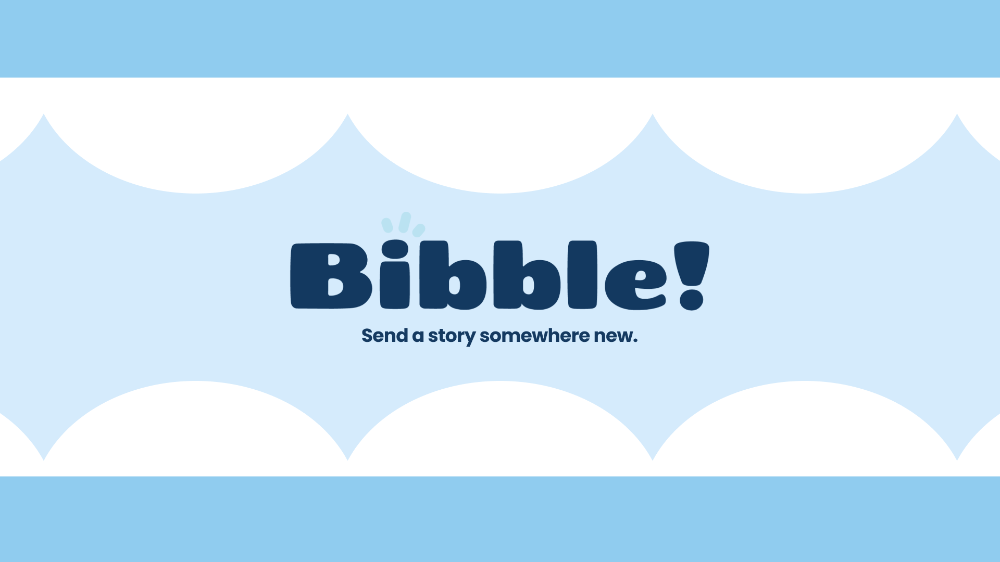
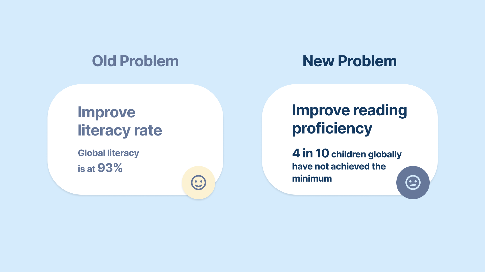
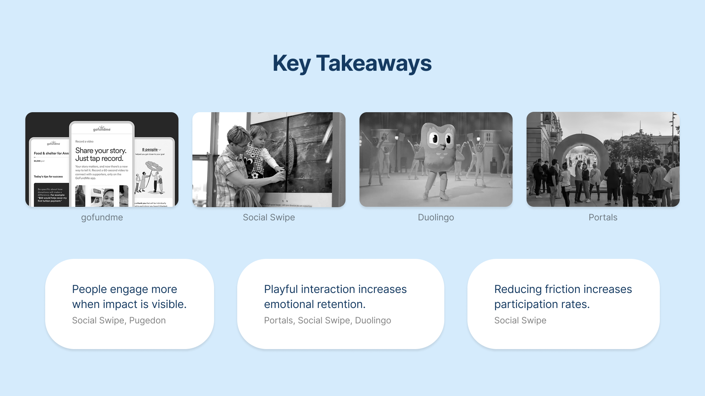
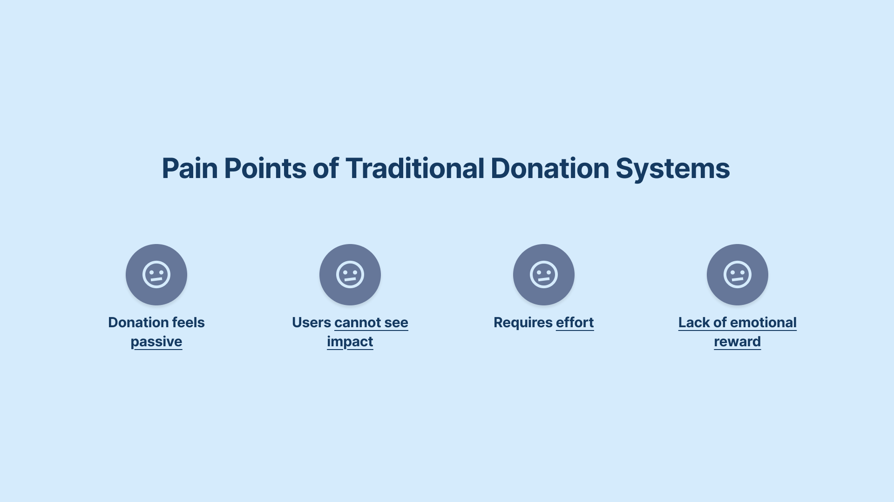
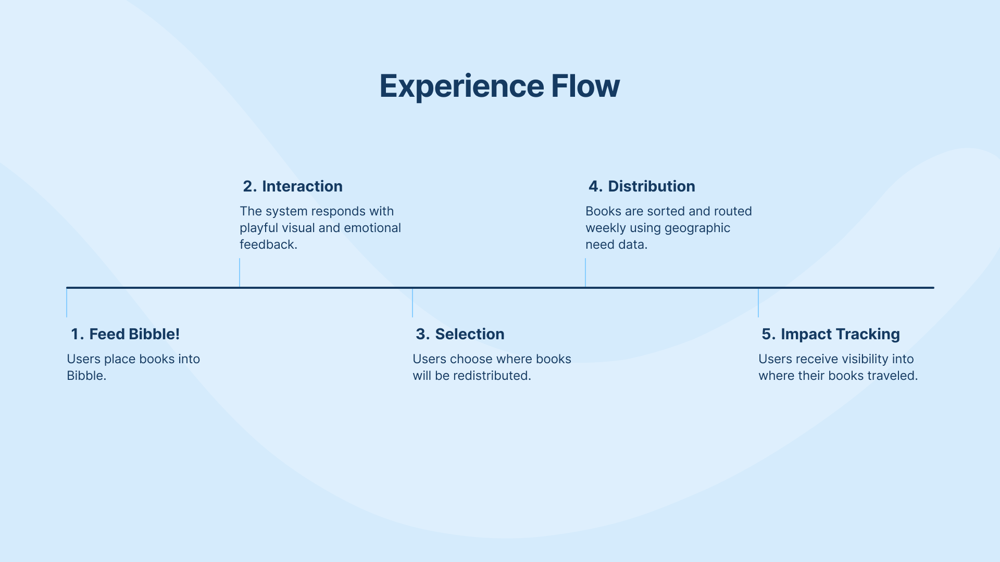
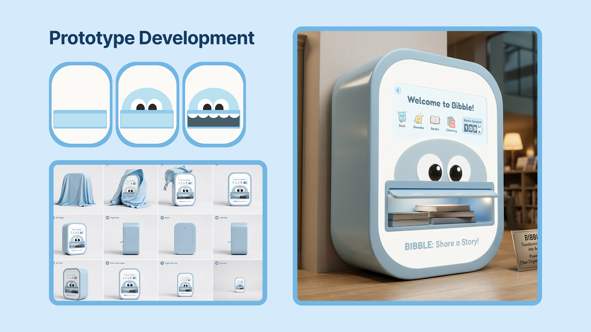
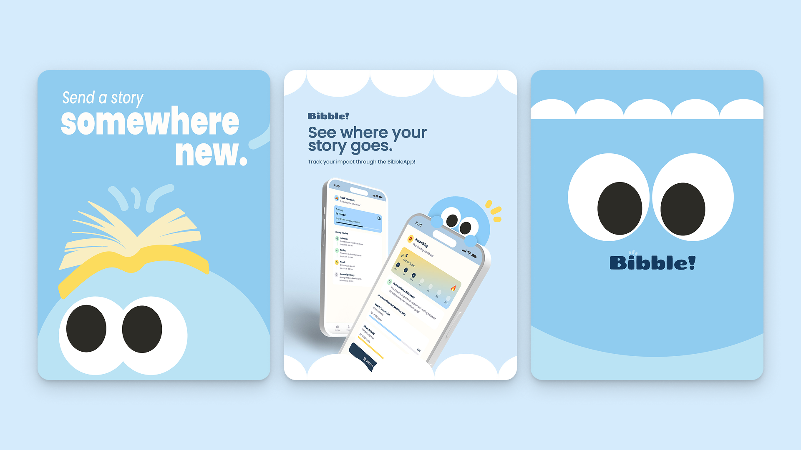

Bibble
Transforming Book Donation into a System of Circulation

Overview
Bibble is a book redistribution experience designed to make giving feel immediate, meaningful, and rewarding by transforming passive donation into active participation. It's a concept for Creative Conscience's brief on SDG 4, Quality Education, and it advanced to the next round of judging for 2027!
Problem
The world is producing readers, but access to educational resources remains uneven.

As literacy rates improve globally, the challenge shifts from teaching people how to read toward ensuring equitable access to reading materials. Access to books improves reading proficiency by encouraging regular reading, expanding vocabulary, strengthening comprehension, and developing critical thinking skills, particularly during a child's formative years.
The problem is not scarcity, it's stagnation. Books exist in abundance, but access to them does not circulate equally.
Research
To understand what motivates people to participate and give, I studied GoFundMe, Pugedon, Duolingo, and SocialSwipe, exploring how accessibility, interaction, and rewarding experiences can make giving more engaging and meaningful.

Giving should feel less like a responsibility and more like an opportunity to participate. By making impact visible, interactions playful, and participation effortless, giving can become a more meaningful and rewarding experience that encourages people to return.

Solution
Get people to give, act, and come back.
Meet Bibble, a curious little bookworm who keeps stories moving.
You feed Bibble your books, choose where they go, and Bibble responds with a small moment of joy. Books are then routed weekly by where they're needed most, and you can track your book's journey to its new home.


